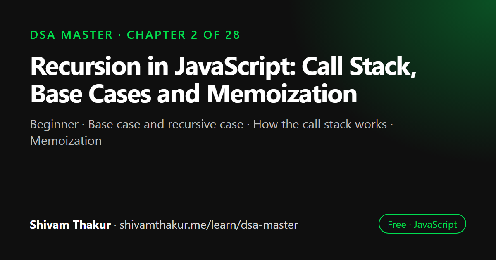

Chapter 2 of 28 · Beginner
Recursion in JavaScript: Call Stack, Base Cases and Memoization
The Recursion Masterclass

Recursion is a technique where a function solves a problem by calling itself on a smaller version of the same problem until it reaches a base case. This chapter covers the anatomy of a recursive function, what happens on the call stack, why naive Fibonacci is exponential, how memoization fixes it, and when iteration is the better choice.
In this chapter you will learn
- Base case and recursive case
- How the call stack works
- Memoization
- Recursion vs iteration trade-offs
- Debugging recursive functions
2.0 Why This Chapter Exists Before Any Data Structure Chapter
Here's an uncomfortable truth about DSA education: almost every advanced topic in this book secretly depends on recursion. Trees are naturally recursive. Graph traversal (DFS) is naturally recursive. Backtracking is recursion with a specific discipline. Divide-and-conquer sorting algorithms (Merge Sort, Quick Sort) are recursion. Dynamic Programming is "recursion with memory." If your mental model of recursion is shaky, every one of those chapters will feel like memorizing disconnected magic tricks instead of applying one deeply-understood idea over and over.
So we stop here, before touching a single data structure, and build recursion from the studs up. Take this chapter seriously — more interview failures trace back to a shaky recursion model than to any single data structure.
2.1 What Is Recursion, Really?
Definition: Recursion is a technique where a function solves a problem by calling itself on a smaller version of the same problem, until it reaches a case simple enough to answer directly.
That's the textbook definition. Now let's build the actual intuition, because the definition alone won't save you when you're staring at a blank editor in an interview.
Real-Life Analogy: Russian Nesting Dolls (Matryoshka)
Imagine you're handed a Russian nesting doll and asked "how many dolls are in this set?" You don't need a special "count all dolls" superpower. You just need one simple rule, applied repeatedly:
"Open this doll. If there's nothing inside, the count is 1 (just me). If there's a smaller doll inside, the count is 1 (me) plus whatever the answer is for that smaller doll."
Notice what just happened: you defined "how many dolls are in this set" in terms of "how many dolls are in a smaller set." You never had to think about the whole tower of dolls at once. You only ever had to think about one layer, and trust that the same rule, applied to the smaller doll, would give the right answer.
This is the single most important mental shift in this entire chapter:
2.2 Anatomy of a Recursive Function
Every correct recursive function has exactly two required ingredients:
2.2.1 The Base Case
Definition: The base case is the condition under which the function stops calling itself and returns a direct, non-recursive answer.
Without a base case, your function calls itself forever (or until the program crashes) — this is the recursive equivalent of an infinite loop, and it's called infinite recursion.
2.2.2 The Recursive Case
Definition: The recursive case is the step where the function calls itself with a smaller or simpler version of the input, then uses that result to compute the answer for the current input.
Let's see both in the simplest possible example: factorial.
function factorial(n) {
// BASE CASE: the simplest possible input we can answer directly
if (n === 0 || n === 1) {
return 1;
}
// RECURSIVE CASE: solve a smaller problem (n-1), then combine
return n * factorial(n - 1);
}
console.log(factorial(5)); // 1202.3 The Call Stack: What's Actually Happening in Memory
To truly understand recursion (not just pattern-match syntax), you must understand the call stack, because that's the actual physical mechanism recursion relies on.
2.4 Dry Run: Fibonacci — Where Recursion Gets Interesting
Factorial only ever makes one recursive call per invocation — a "linear" recursion, shaped like a straight chain. Let's now study a function that makes two recursive calls, because this is where recursion becomes visually a tree, and where naive approaches become dangerously slow.
function fib(n) {
if (n === 0) return 0; // BASE CASE 1
if (n === 1) return 1; // BASE CASE 2
return fib(n - 1) + fib(n - 2); // RECURSIVE CASE: two smaller calls
}
console.log(fib(6)); // 8Visualization: The Call Tree for fib(5)
fib(5)
/ \
fib(4) fib(3)
/ \ / \
fib(3) fib(2) fib(2) fib(1)
/ \ / \ / \
fib(2) fib(1) fib(1) fib(0) fib(1) fib(0)
/ \
fib(1) fib(0)Look closely at this tree. Do you notice something alarming? fib(3) is computed twice. fib(2) is computed three times. fib(1) and fib(0) are computed many times. We are re-solving the exact same sub-problems over and over, throwing away the answer each time instead of remembering it.
2.5 Memoization: Giving Recursion a Memory
Definition: Memoization is an optimization technique where we cache (remember) the results of expensive function calls, so that if the same inputs occur again, we return the cached result instead of recomputing it.
Complexity After Memoization
- Time: O(n) — each unique value of
nfrom0to the target is computed exactly once, and every subsequent request is an O(1) cache lookup. - Space: O(n) — for the memo cache, plus O(n) for the call stack depth. Still simplifies to O(n) total (we add these, and both are the same order).
This is an almost unbelievable improvement: from O(2ⁿ) to O(n) by adding four lines of caching logic. This exact pattern — "naive recursion is exponential because of overlapping sub-problems; add memoization to make it polynomial" — is the entire conceptual seed of the Dynamic Programming Masterclass chapter later in this book. If you deeply understand this Fibonacci example, you have already understood 50% of what makes DP click for most learners.
2.6 Two Recursion Patterns Every Engineer Must Recognize
2.6.1 Linear Recursion (One Recursive Call)
Shape: a straight chain, like a single line of dominoes falling. Factorial, summing an array recursively, and traversing a singly-linked list are all linear recursion.
function sumArray(arr, index = 0) {
if (index === arr.length) return 0; // BASE CASE: ran off the end
return arr[index] + sumArray(arr, index + 1); // RECURSIVE CASE
}
console.log(sumArray([1, 2, 3, 4, 5])); // 15Dry run for sumArray([1,2,3]):
sumArray([1,2,3], 0) = 1 + sumArray([1,2,3], 1)
= 1 + (2 + sumArray([1,2,3], 2))
= 1 + (2 + (3 + sumArray([1,2,3], 3)))
= 1 + (2 + (3 + 0)) <- base case hit
= 1 + (2 + 3)
= 1 + 5
= 62.6.2 Branching (Tree) Recursion (Multiple Recursive Calls)
Shape: a tree, like Fibonacci above, or exploring every possible path through a maze. This is the shape underlying tree traversal, graph DFS, and backtracking — all covered in later chapters.
function countPaths(row, col) {
// Counts paths from (row, col) to (0, 0), moving only up or left
if (row === 0 && col === 0) return 1; // BASE CASE: reached the destination
if (row < 0 || col < 0) return 0; // BASE CASE: walked off the grid
return countPaths(row - 1, col) + countPaths(row, col - 1); // branch two ways
}
console.log(countPaths(2, 2)); // 62.7 Recursion vs. Iteration: The Eternal Trade-off
Every recursive solution can be rewritten as an iterative (loop-based) solution, and vice versa — they are formally equivalent in power. But they are not equally convenient for every problem. Choosing correctly is a real engineering skill.
Naive vs. Better vs. Best: Summing an Array Three Ways
Naive (recursive, as shown above):
function sumRecursive(arr, index = 0) {
if (index === arr.length) return 0;
return arr[index] + sumRecursive(arr, index + 1);
}
// Time: O(n) Space: O(n) — due to call stack depth!Better (iterative):
function sumIterative(arr) {
let total = 0;
for (const num of arr) {
total += num;
}
return total;
}
// Time: O(n) Space: O(1) — no call stack growth, just one accumulator variableBest (built-in, most idiomatic modern JS):
function sumBuiltIn(arr) {
return arr.reduce((total, num) => total + num, 0);
}
// Time: O(n) Space: O(1) auxiliary (reduce doesn't grow a call stack per element)When to Actually Choose Recursion Over Iteration
Given that iteration is often more space-efficient, why use recursion at all? Because some problems are naturally tree-shaped or self-similar, and forcing them into a loop-based shape makes the code drastically harder to read, write, and prove correct.
Concretely, prefer recursion when:
- The data structure itself is recursive — trees and graphs are defined in terms of smaller trees/graphs. Traversing them recursively mirrors their actual structure. (You can iteratively traverse a tree using an explicit stack, and we will show this too in the Trees chapter — but the recursive version is almost always more readable.)
- You need to explore multiple branching possibilities — backtracking problems (generate all subsets, all permutations, solve a maze) are dramatically cleaner recursively, because the call stack does the "remember where I was and try the next option" bookkeeping for you, automatically.
- Divide-and-conquer is the natural strategy — Merge Sort and Quick Sort (Chapter on Sorting) are dramatically clearer recursively.
Prefer iteration when:
- The problem is a simple linear pass — summing, finding a max, filtering — a
forloop is more direct and avoids unnecessary call stack usage. - Stack depth could be dangerously large — JavaScript engines impose a maximum call stack size (typically somewhere around 10,000–15,000 frames depending on the engine and available memory, though this is not a spec-guaranteed number). A recursive solution over, say, 1,000,000 items will crash with
RangeError: Maximum call stack size exceeded, while an iterative solution handles it fine.
2.8 Classic Recursion Problems, Fully Worked
Let's now build real muscle memory by working through canonical recursion problems the right way: naive → better → best, with full dry runs.
2.8.1 Reversing a String Recursively
Naive recursive approach:
function reverseString(str) {
if (str.length <= 1) return str; // BASE CASE
return reverseString(str.slice(1)) + str[0]; // RECURSIVE CASE
}
console.log(reverseString('hello')); // 'olleh'Dry run for 'abc':
reverseString('abc')
= reverseString('bc') + 'a'
= (reverseString('c') + 'b') + 'a'
= (('' + 'c') + 'b') + 'a' <- reverseString('') hits base case first... Wait — let's be precise. str.length <= 1 catches single characters directly as the base case:
reverseString('abc')
= reverseString('bc') + 'a'
= (reverseString('c') + 'b') + 'a'
= ('c' + 'b') + 'a' <- reverseString('c') hits base case, returns 'c' directly
= 'cb' + 'a'
= 'cba'- Time: O(n²) in most engines! Because
str.slice(1)itself is O(n), and we call it n times → O(n) × O(n) = O(n²). This is a sneaky trap: the recursion looks like it should be O(n), but the hidden cost of.slice()at every level makes it quadratic. - Space: O(n) for the call stack, plus O(n) for the string concatenation results at each level.
Better — iterative with array + two pointers (as previewed in Chapter 1):
function reverseStringIterative(str) {
const chars = str.split('');
let left = 0, right = chars.length - 1;
while (left < right) {
[chars[left], chars[right]] = [chars[right], chars[left]];
left++;
right--;
}
return chars.join('');
}
// Time: O(n) Space: O(n) for the array copy (strings are immutable, so this is
// essentially unavoidable if you want a genuinely new reversed string)2.8.2 Power Function: x^n
Naive recursive:
function power(x, n) {
if (n === 0) return 1; // BASE CASE: anything^0 = 1
return x * power(x, n - 1); // RECURSIVE CASE
}
// Time: O(n) Space: O(n)Optimized — "fast power" using divide and conquer:
This is a genuinely important interview pattern, not just a toy optimization. The key insight: x^n = (x^(n/2))², and we only need to compute the half-power once and square it, instead of computing the full chain of n multiplications.
function fastPower(x, n) {
if (n === 0) return 1; // BASE CASE
const half = fastPower(x, Math.floor(n / 2)); // compute ONCE
if (n % 2 === 0) {
return half * half; // even exponent
} else {
return half * half * x; // odd exponent, one extra factor
}
}
console.log(fastPower(2, 10)); // 1024Dry run for fastPower(2, 10):
fastPower(2, 10)
half = fastPower(2, 5)
half = fastPower(2, 2)
half = fastPower(2, 1)
half = fastPower(2, 0) = 1 <- base case
n=1 is odd: 1 * 1 * 2 = 2
n=2 is even: 2 * 2 = 4
n=5 is odd: 4 * 4 * 2 = 32
n=10 is even: 32 * 32 = 1024
RESULT: 1024 ✓- Naive time: O(n) — n sequential multiplications.
- Fast power time: O(log n) — because at every recursive level,
nis cut in half, exactly the same halving pattern as binary search from Chapter 1. - Space: O(log n) for both the call stack depth (since fast power only recurses log n times).
This is a beautiful, concrete illustration of the "naive → better → best" framework the whole book follows: same problem, same correctness, but a fundamentally different growth rate by exploiting a mathematical structure (repeated squaring) instead of brute-force repetition.
2.8.3 Generating All Subsets of a Set (Power Set) — Branching Recursion in Action
This is our first real taste of the backtracking family (a full masterclass chapter awaits later), and it's the perfect example of branching recursion solving an exponential-by-nature problem as efficiently as mathematically possible.
The problem: given [1, 2, 3], generate every possible subset: [], [1], [2], [3], [1,2], [1,3], [2,3], [1,2,3].
Intuition: The "Include or Exclude" Decision Tree
For every single element, we face exactly one binary decision: include it in the current subset, or don't. With n elements, that's n binary decisions, giving 2ⁿ total possible subsets — which matches our O(2ⁿ) complexity class from Chapter 1 exactly, and this time, it's unavoidable, because there genuinely are 2ⁿ valid outputs to produce. (Unlike naive Fibonacci, where O(2ⁿ) was a bug we could fix — here, O(2ⁿ) is the honest lower bound, because we must generate that many results.)
function generateSubsets(nums) {
const result = [];
function backtrack(index, currentSubset) {
// BASE CASE: we've made a decision for every element
if (index === nums.length) {
result.push([...currentSubset]); // copy! (explained below)
return;
}
// CHOICE 1: exclude nums[index]
backtrack(index + 1, currentSubset);
// CHOICE 2: include nums[index]
currentSubset.push(nums[index]);
backtrack(index + 1, currentSubset);
currentSubset.pop(); // undo the choice — this is the "backtrack" step!
}
backtrack(0, []);
return result;
}
console.log(generateSubsets([1, 2, 3]));
// [[], [3], [2], [2,3], [1], [1,3], [1,2], [1,2,3]]The "Undo" Step Is What Makes It Backtracking
Notice the currentSubset.pop() after the recursive call returns. This is the defining signature of backtracking: try a choice, recurse, then undo the choice before trying the next one, so that sibling branches in the decision tree don't see stale state from a previous branch. We will formalize this completely in the dedicated Backtracking Masterclass chapter — for now, just recognize the shape: choose → explore → un-choose.
2.9 Recursion on Recursive Data (A Preview of Trees)
So far we've recursed on arrays, strings, and numbers. But recursion's truest home is recursively-defined data — and there's no better preview than a directory/file system, since everyone already has the right mental model for it.
// A simplified file-system-like structure
const fileSystem = {
name: 'root',
type: 'folder',
children: [
{ name: 'photo.jpg', type: 'file', size: 500 },
{
name: 'documents',
type: 'folder',
children: [
{ name: 'resume.pdf', type: 'file', size: 200 },
{ name: 'notes.txt', type: 'file', size: 10 },
],
},
],
};
function getTotalSize(node) {
if (node.type === 'file') {
return node.size; // BASE CASE: a file's size is just itself
}
// RECURSIVE CASE: a folder's size is the sum of all its children's sizes
let total = 0;
for (const child of node.children) {
total += getTotalSize(child);
}
return total;
}
console.log(getTotalSize(fileSystem)); // 710Notice the structure of the problem itself is recursive: a folder is defined as "a collection of files and/or other folders." This is precisely the same shape as a tree data structure (which we build formally, node by node, in the Trees chapter), and precisely why tree algorithms are almost always written recursively — the code mirrors the natural recursive definition of the data. This example is the bridge from "recursion as a technique" (this chapter) to "recursion as the natural language of hierarchical data structures" (upcoming chapters).
2.10 Debugging Recursive Functions: A Practical Toolkit
Recursive bugs are notoriously confusing to beginners because the "state" of the program is smeared across many stack frames instead of sitting in one place. Here is the practical toolkit professionals actually use.
Technique 1: Indented Console Logging (Visualize the Tree Shape)
function fibDebug(n, depth = 0) {
const indent = ' '.repeat(depth);
console.log(`${indent}fib(${n}) called`);
if (n <= 1) {
console.log(`${indent}-> returning ${n} (base case)`);
return n;
}
const result = fibDebug(n - 1, depth + 1) + fibDebug(n - 2, depth + 1);
console.log(`${indent}-> returning ${result}`);
return result;
}
fibDebug(4);Output (indentation visually reconstructs the call tree from section 2.4):
fib(4) called
fib(3) called
fib(2) called
fib(1) called
-> returning 1 (base case)
fib(0) called
-> returning 0 (base case)
-> returning 1
fib(1) called
-> returning 1 (base case)
-> returning 2
fib(2) called
fib(1) called
-> returning 1 (base case)
fib(0) called
-> returning 0 (base case)
-> returning 1
-> returning 3Technique 2: Always Verify the Base Case in Isolation First
Before trusting any recursive function, manually verify: does calling it with the smallest/simplest possible input return the exact right answer, with zero recursive calls happening? If the base case itself is wrong, every single answer built on top of it (via the leap of faith) will be wrong too, no matter how correct your recursive-case logic is.
Technique 3: Print Stack Depth to Catch Runaway Recursion Early
function safeRecurse(n, depth = 0) {
if (depth > 10000) {
throw new Error('Recursion depth exceeded expected bound — likely infinite recursion bug');
}
// ... rest of function
}This is a defensive technique for developing (not shipping) recursive functions on unfamiliar recursive data — it turns a cryptic native RangeError (which gives you no context about which function or why) into an error message that at least confirms your suspicion and marks where to look.
2.11 Chapter Summary
We built recursion from first principles in this chapter, and it is worth restating the throughline explicitly because it underlies nearly everything left in this book. Recursion is a technique for solving a problem by trusting that a smaller version of the exact same problem is already solved (the "leap of faith"), and writing only the logic needed to combine that trusted smaller answer with the current layer. Every correct recursive function needs exactly two ingredients: a base case that stops the recursion, and a recursive case that both shrinks the problem and combines results correctly.
We learned that recursion is physically implemented via the call stack, a Last-In-First-Out structure, and that this has a real, often-overlooked consequence: recursive solutions carry O(depth) space complexity from stack frames alone, regardless of whether they declare any other memory. We saw the two fundamental shapes recursion takes — linear (a chain, like factorial) and branching (a tree, like Fibonacci or subset generation) — and we proved, via naive Fibonacci's O(2ⁿ) blowup, that a recursive solution being correct says nothing about it being efficient: overlapping sub-problems must be caught and cached via memoization to avoid catastrophic redundant recomputation, a technique that is the direct conceptual ancestor of the entire Dynamic Programming chapter ahead.
We compared recursion against iteration honestly, without dogma in either direction: iteration wins for simple linear passes and for avoiding JavaScript's real, practical call-stack depth limits, while recursion wins decisively whenever the data itself is recursively shaped (trees, nested structures) or the problem requires exploring many branching possibilities (backtracking). We learned the specific, sometimes-surprising JavaScript trivia that tail call optimization exists in the ECMAScript spec but is not implemented in V8, meaning you must never claim O(1) space from tail recursion in a Node.js or Chrome context. Finally, we worked five classic problems end-to-end with the naive → better → best framework (factorial, Fibonacci, string reversal, fast exponentiation, and power-set generation via backtracking), and previewed how recursion naturally mirrors recursively-defined data like file systems — the exact bridge into the Trees chapter ahead.
2.12 Revision Notes
- Every recursive function needs a base case (stops it) and a recursive case (shrinks the problem toward the base case).
- The "leap of faith": trust the recursive call on a smaller input already works; only verify the current layer's combining logic.
- The call stack is real memory: recursion depth
nmeans O(n) space, even with zero other variables. - Naive branching recursion can hide exponential blowup from overlapping sub-problems (Fibonacci) — memoization fixes this by caching already-solved sub-problems.
- Recursion shapes: linear (chain) vs. branching (tree).
- Prefer recursion for recursively-shaped data (trees, nested structures) and branching-exploration problems (backtracking). Prefer iteration for simple linear passes and when input size threatens JS's real call stack limits.
- JavaScript engines (V8 especially) do not implement tail call optimization despite it being in the ES2015 spec — never claim O(1) space from tail recursion in JS.
- Backtracking's rhythm: choose → explore → un-choose (undo mutations after the recursive call returns), and always push a copy of a mutable working array into a results collection, never the live reference.
2.13 Mind Map (ASCII)
RECURSION
|
+---------------+------------+------------+----------------+
| | | |
ANATOMY CALL STACK PATTERNS RECURSION vs
| | | ITERATION
Base case LIFO frames +-----+-----+ |
Recursive O(depth) space Linear Branching Use recursion:
case shrinks even w/ no vars (chain) (tree) - recursive data
toward base | | - branching search
factorial fibonacci, Use iteration:
array sum subsets, - simple linear pass
backtracking - stack depth risk
|
OVERLAPPING SUBPROBLEMS
|
MEMOIZATION
(cache results)
O(2^n) -> O(n)
|
seeds DYNAMIC PROGRAMMING
(later chapter)2.14 Cheat Sheet
RECURSION CHECKLIST
=====================
1. What is the base case? (simplest input, answered directly, no recursive call)
2. Does every recursive call move STRICTLY closer to the base case?
3. What does the recursive case need to COMBINE (current layer + trusted smaller answer)?
4. Are there overlapping sub-problems? -> add memoization (Map cache)
5. What's the real space complexity? -> don't forget O(depth) for the call stack itself!
6. Is input size safe for JS's real stack limit (~10-15k frames)? If not, consider iteration.
PATTERN RECOGNITION
=====================
"smaller version of the same problem" -> recursion candidate
"tree / nested / hierarchical data" -> recursion is natural
"generate all subsets/permutations/combos"-> branching recursion + backtracking
"same expensive call repeated with same
inputs across the recursion tree" -> add memoization
"x^n, repeated halving structure" -> divide & conquer (O(log n))
JAVASCRIPT-SPECIFIC GOTCHAS
=============================
- No real tail call optimization in V8 -> tail-recursive style is still O(n) space in Node/Chrome
- str.slice()/substring() inside recursion adds hidden O(n) cost per call
- Pushing a mutable working array into results without [...copy] causes stale-reference bugs
- RangeError: Maximum call stack size exceeded -> missing base case, unreachable base case,
OR legitimately-too-deep input for recursion2.15 Key Takeaways
- Recursion = trust the smaller answer, write only the current layer's combining logic (the leap of faith).
- Base case + recursive case that shrinks toward it are the only two non-negotiable ingredients.
- The call stack is real memory — always report O(depth) space for recursive solutions.
- Correctness ≠ efficiency: naive branching recursion can hide exponential blowup; memoization is the fix.
- Recursion shines on recursively-shaped data (trees) and branching search (backtracking); iteration shines on simple linear passes and deep/large inputs.
- JavaScript engines do not reliably implement tail call optimization — never assume O(1) space from tail recursion in production JS.
2.16 20 Multiple Choice Questions
Tap an answer to check it. Your score updates as you go.
Score: 0 / 0 answered (20 questions)
What are the two required components of a correct recursive function?
What happens if a recursive function has no base case?
What data structure underlies how recursive function calls are managed in memory?
What is the time complexity of naive (non-memoized) recursive Fibonacci?
What technique fixes the exponential blowup in naive recursive Fibonacci?
What is the space complexity of a recursive function with recursion depth
n, even if it declares no other variables?Which of these is an example of "linear recursion" (a chain, one recursive call per invocation)?
Does V8 (Chrome/Node.js) implement tail call optimization from the ES2015 spec?
In the backtracking subset-generation example, why must we push
[...currentSubset]instead ofcurrentSubsetdirectly?What is the defining three-step rhythm of backtracking?
What error does JavaScript throw for infinite or excessively deep recursion?
In the "fast power" (exponentiation by squaring) algorithm, what is the time complexity?
Why is the naive recursive string reversal actually O(n²), not O(n)?
What is "the leap of faith" in recursion?
Which scenario most strongly favors recursion over iteration?
Which scenario most strongly favors iteration over recursion in JavaScript?
What does memoization fundamentally rely on to work correctly?
Why do we use a
Maprather than a plain object for memoization caches in this book's convention?In the file-system total-size example, what makes recursion the natural fit?
What is the total number of subsets (including the empty set) for a set of
nelements?
Show the answer key
1-b, 2-b, 3-b, 4-c, 5-b, 6-c, 7-b, 8-b, 9-b, 10-b, 11-c, 12-b, 13-b, 14-b, 15-b, 16-c, 17-b, 18-b, 19-b, 20-c
2.17 20 Coding Problems
Easy
- Write a recursive function to compute the sum of digits of a positive integer (e.g.,
sumDigits(1234)→10). - Write a recursive function to check if a number is a power of two.
- Write a recursive function to count the number of vowels in a string.
- Write a recursive function to find the maximum value in an array without using
Math.maxor loops. - Write a recursive function to check whether a string is a palindrome.
Medium
- Write a memoized recursive function to compute the
n-th Fibonacci number, and state before/after time complexity. - Write a recursive function to flatten a deeply nested array (e.g.,
[1, [2, [3, [4]], 5]]→[1,2,3,4,5]). - Write a recursive function that computes the greatest common divisor (GCD) of two numbers using the Euclidean algorithm. State its time complexity.
- Write a recursive function to generate all permutations of an array of unique numbers.
- Write a recursive binary search function (recursive version of Chapter 1's phone book strategy) and state its time and space complexity, specifically addressing call stack space.
Hard
- Write a recursive function that solves the "count paths in a grid" problem from section 2.6.2, then add memoization to make it efficient for large grids. Compare complexity before and after.
- Implement recursive Merge Sort from scratch (a full deep dive comes in the Sorting chapter, but attempt it now using only what you've learned about divide-and-conquer recursion).
- Write a recursive function to generate all valid combinations of balanced parentheses for
npairs (e.g.,n=2→["(())", "()()"]). - Implement the "power set" (subset generation) problem from section 2.8.3 from memory, without looking back, then verify against the book's version.
- Write a recursive function that solves the Tower of Hanoi puzzle for
ndisks, printing each move, and derive its time complexity from first principles (hint: how many total moves are required?).
Interview Level
- (Google-level) Given a nested object representing arbitrary JSON, write a recursive function that returns the maximum nesting depth.
- (Amazon-level) Implement a recursive function to compute
x^n mod mefficiently for very largen(combine fast exponentiation with modular arithmetic), relevant to rate-limiting/hashing/crypto-adjacent systems. - (Microsoft-level) Given a recursive function that's hitting
RangeError: Maximum call stack size exceededon large inputs, but the underlying problem is a simple linear pass, rewrite it iteratively and explain in a comment exactly why the recursive version was unsafe. - (Meta-level) Write a recursive function to determine if two given binary trees (simple
{value, left, right}objects) are structurally identical (same shape, same values) — this previews the Trees chapter's core traversal pattern. - (Netflix-level) Design (with recursion) a function that recursively resolves a dependency graph of "modules," where each module lists other modules it depends on, detecting and reporting if a circular dependency exists (return
true/false), previewing the Graph Algorithms chapter's cycle detection.
2.18 5 Interview Questions
- "Explain the base case and recursive case of a function you just wrote, and convince me it terminates." (Tests fundamental correctness reasoning.)
- "What is the space complexity of this recursive function, including anything you might be tempted to forget?" (Tests whether the candidate remembers call stack space.)
- "This naive recursive solution is exponential. Why, exactly, and how would you fix it?" (Tests understanding of overlapping sub-problems and memoization — almost always asked via a Fibonacci-shaped question.)
- "Would you solve this with recursion or a loop, and why?" (Tests judgment, not just capability — a strong answer discusses call stack risk and code clarity trade-offs, not just "recursion is elegant.")
- "Does JavaScript optimize tail-recursive functions to avoid stack growth?" (A specific, high-signal trivia question — correct answer: no, not in V8, despite being in the ES2015 spec.)
2.19 3 Real Projects
- Recursive JSON Explorer: Build a small Node.js CLI tool that takes an arbitrary JSON file and recursively reports: max nesting depth, total number of keys, total number of leaf values, and a breakdown of value types encountered — all computed with recursive traversal functions you write yourself.
- Memoization Benchmark Suite: Build on the "Complexity Profiler Tool" from Chapter 1's projects — specifically benchmark naive vs. memoized Fibonacci (and naive vs. memoized "count paths in a grid" from section 2.6.2) at increasing
n, and produce console output that empirically demonstrates the O(2ⁿ) → O(n) improvement from memoization. - Subset & Permutation Playground: Build a small interactive Node.js script that takes an array from the command line and prints all subsets, all permutations, and (bonus) all combinations of a given size
k, all implemented via the choose/explore/un-choose backtracking rhythm from section 2.8.3 — this becomes your personal reference implementation to revisit before the Backtracking Masterclass chapter.
2.20 Further Reading
- Structure and Interpretation of Computer Programs (SICP) — Abelson & Sussman, especially the early chapters on recursive process vs. iterative process, a distinction that goes deeper than what we covered here.
- MDN Web Docs: "Recursion" and "Function" — for JavaScript-specific call stack behavior notes.
- Search "V8 blog tail calls" for the engineering team's own public explanation of why proper tail call optimization was implemented and then later removed/never shipped broadly in V8.
- Steven Skiena, The Algorithm Design Manual, chapter on recursion and backtracking, for additional war-story-style problem framing.
Recursion in JavaScript: frequently asked questions
What is recursion in JavaScript?
Recursion is when a function calls itself to solve a smaller instance of the same problem. Every recursive function needs a base case that stops the calls and a recursive case that moves the input closer to that base case.
What happens if a recursive function has no base case?
It keeps calling itself until the call stack runs out of space, and JavaScript throws a RangeError: Maximum call stack size exceeded.
What is memoization?
Memoization caches the result of each sub-problem the first time it is computed, usually in a Map, so repeated calls return instantly. It turns naive recursive Fibonacci from O(2ⁿ) time into O(n).
Does JavaScript support tail call optimization?
In practice, no. Tail call optimization is in the ES2015 specification, but V8 (Chrome and Node.js) and most engines do not implement it, so a tail-recursive function still uses O(n) stack space in production JavaScript.